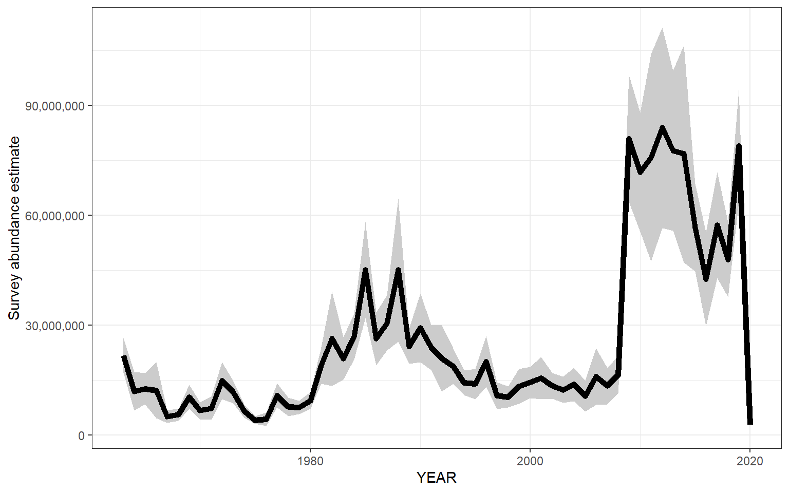

Section 5 Population information
5.1 Abundance
Abundance data were pulled from survdat and assessmentdata::stockAssessmentData.
5.1.1 Figures
Separate geom_gls() functions were fit for fall and spring measurements; trend lines are only shown when the trend was statistically significant, so some plots may have fewer than two trend lines. Fall has solid trend lines, and spring has dashed trend lines. Please note, sometimes the survey observed a small number of fish outside of the defined stock area.
5.1.1.1 Survey abundance (raw measurements)

5.1.1.2 Survey abundance (swept area estimates)
Please note, these estimates are not parsed by region or season. Swept area estimates are based on spring and fall surveys only. The shaded gray region indicates +/- two standard errors. 
5.1.1.3 Assessment abundance
## [1] "NO DATA"5.1.2 Survey summary
preserve50b152de284c2f19
5.1.3 Data
5.1.3.1 Survey data (raw measurements)
preserve36bb8326cd4644c8
5.1.3.2 Survey data (swept area estimates)
preserve72fcbf9aa659337e
5.1.3.3 Assessment data
preserve9b2b0e76f41543a2
5.2 Biomass
Biomass data were pulled from survdat.
5.2.1 Figures
Separate geom_gls() functions were fit for fall and spring measurements; trend lines are only shown when the trend was statistically significant, so some plots may have fewer than two trend lines. Fall has solid trend lines, and spring has dashed trend lines. Please note, sometimes the survey observed a small number of fish outside of the defined stock area.
5.2.1.1 Survey biomass (raw measurements)

5.2.1.2 Survey biomass (swept area estimates)
Please note, these estimates are not parsed by region or season. Swept area estimates are based on spring and fall surveys only. The shaded gray region indicates +/- two standard errors.

5.2.1.3 Assessment biomass:

5.2.2 Summary
preserve275492f16e3b3a71
5.2.3 Data
5.2.3.1 Survey data (raw measurements)
preserve9f885747b0043472
5.2.3.2 Survey data (swept area estimates)
preserve6190ddbc28bde272
5.2.3.3 Assessment data
preserve5ea58d1432e3400b
5.3 B/Bmsy
B/Bmsy data were pulled from assessmentdata::stockAssessmentSummary.
The most recent status of B/Bmsy is: GOOD
5.3.1 Figure

5.3.2 Data
preserve38b8a3e50474266e
5.4 Recruitment
Recruitment data were pulled from assessmentdata::stockAssessmentData. Separate geom_gls() functions were fit for each region; trend lines are only shown when the trend was statistically significant, so some plots may have fewer trend lines than regions.
5.4.1 Figure
## [1] "NO DATA"5.4.2 Data
preserveb260dad6062c73ed